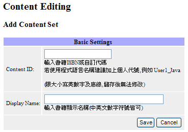
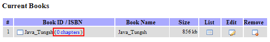
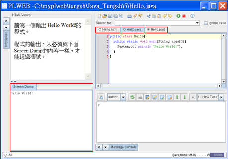
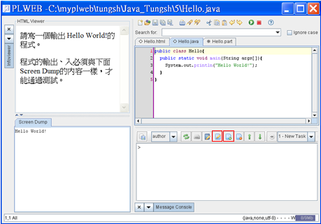
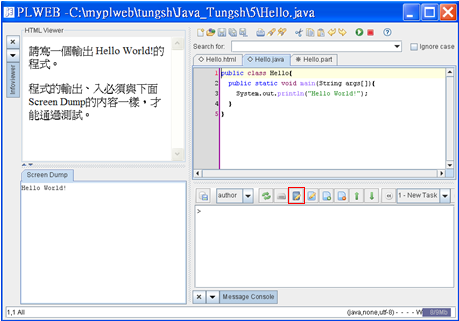
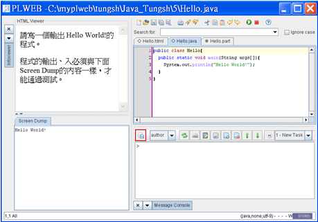
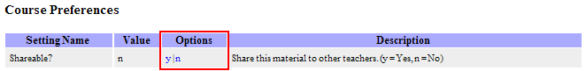

PLWeb的教材是由Books所組成，而一本書又由許多Chapter組成，每一個Chapter又由數個練習題組成。教材的編輯是使用為不同語言預備的範本（Template）以簡化編輯的程序。所以製作教材的流程是：
1.
在登入PLWeb後，點選

由於有許多老師會製作教材，所以請取一個能夠識別您的教材的名稱（如加上：Tungsh）。由於書名會用來當作檔名，所以除了「_」之外不要使用其他特殊符號。
加入章節。這部份分以下幾個步驟：
點選書名（如：Java_Tungsh）

點選 （edit）後，一個編輯器會下載至您的電腦，這個編輯器是編輯練習的主要工具。編輯Java練習用的template已經預備了一個包含三個檔案的範例，這個範例的三個檔案也被開啟了。其中*.html檔可用來編輯題目，*.java檔則用來編輯解答，*.part檔則是部份解答的提示，*.part檔不必每一題都提供內容，有需要部份解答的題目才需要提供。此外，執行這一題的Screen Dump也顯示出來。如下圖：

使用這個範例當作模版，來製作新的練習：例如將「Hello World!」改成「Hello Java! 」*.html檔也順便修改，存檔後按 執行該程式。對這一題來說，還不需要更改檔名。按Reload
執行該程式。對這一題來說，還不需要更改檔名。按Reload  可以看到更新後的Html Viewer與Screen Dump的內容。第一題便完成了。
可以看到更新後的Html Viewer與Screen Dump的內容。第一題便完成了。
（Optional）如果需要，可以選擇用學生身份  測試該程式，便可看到編輯器下方有如下畫面，test_ok代表測試通過。PLWeb使用程式的輸出來判斷程式是否通過測試。而在編輯練習的過程中，標準答案的輸出已經被自動保存，並用於學生程式輸出結果的比對。
測試該程式，便可看到編輯器下方有如下畫面，test_ok代表測試通過。PLWeb使用程式的輸出來判斷程式是否通過測試。而在編輯練習的過程中，標準答案的輸出已經被自動保存，並用於學生程式輸出結果的比對。

編第二題。這一題則是使用上一題當作範本。請按  (add exercise)，接著按
(add exercise)，接著按  (edit exercise)，然後在彈出的視窗內填入新練習的程式檔名 Good，Good將成為相關檔案的檔名。
(edit exercise)，然後在彈出的視窗內填入新練習的程式檔名 Good，Good將成為相關檔案的檔名。


題目描述檔Good.html
<html>
<head>
<meta http-equiv="Content-Type" content="text/html; charset=UTF-8">
</head>
<body>
程式編輯區中的程式有誤，請修正後輸出：<br>
I love Java!<br>
Java is good!<br>
<br>
程式的輸出、入必須與下面Screen Dump的內容一樣，才能通過測試。
</body>
</html>
解答檔Good.java
public class Good {
public static void main (String args[]) {
System.out.println("I love Java!");
System.out.println("Java is so good!");
}
}
如果不提供解答檔，需將輸出的正確解答，利用該程式語言的輸出指令(Ex：System.out.println(正確解答);、printf(正確解答);、cout << 正確解答 << endl;)，讓PLWeb編輯器能夠在存檔後按 執行該程式記錄正確解答，用於學生程式輸出結果的比對。
執行該程式記錄正確解答，用於學生程式輸出結果的比對。
部份解答（提示）檔Good.part
public class Good {
public static main (String args[]) {
System.out.println(I love Java!);
System.out.println("Java is so good！")
}
}
為本章命名，按  (edit project) ，將Title改為 Hello Java! 然後按Confirm.
(edit project) ，將Title改為 Hello Java! 然後按Confirm.


這一章只有兩題練習，因此可以按  (upload project) 上傳教材並結束這一章的編輯。
(upload project) 上傳教材並結束這一章的編輯。

教材分享
設定Options選項，可以選擇是(y)或否(n)願意將教材分享給其他老師使用。

PLWeb支援所有能夠在DOS Command Shell (cmd.exe)執行的程式語言。
PLWeb已經提供了用來製作C、C++、Java、Scheme、Ruby、Python等語言之練習的Templates。